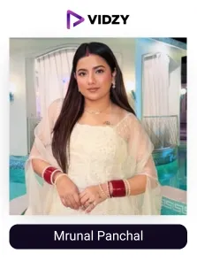
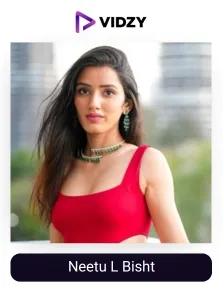
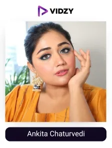
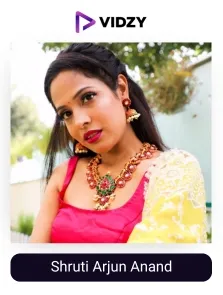
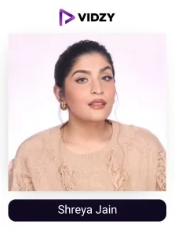
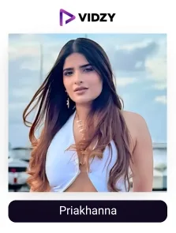
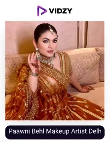
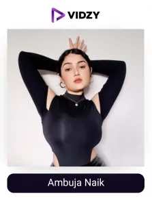

The Indian beauty industry is rapidly growing, and by 2028, it is expected to grow to $35.21 billion at a CAGR of 6.286%. This expansion is driven by increasing consumer spending, a growing middle class, and greater urbanization. The boom in the beauty industry is closely linked to the changing perception of beauty. Today, beauty is more than just looks. It's the way we let the world know who we are, how we feel good about ourselves, and how we get creative. It's a big part of what makes life awesome.
Here is something interesting for you: A study by L'Oréal in collaboration with Human revealed that 88% of women and 80% of men feel more confident when using beauty products. Also, 85% of women and 78% of men consider their skincare routine and makeup as powerful tools for self-expression. Hence, beauty is not only the appearance, rather, it empowers confidence and allows for personal expression.
In India, this self-expression has exploded online due to a wave of incredibly talented beauty UGC creators. With the help of the UGC creation, they showcase their products, nurture their community, express real stories, and make beauty subjective in the digital society. Their relevant content receives a considerable amount of traction and attention from their audience. Therefore, its visibility, branding, and sales can be increased through word-of-mouth marketing. Ultimately, the transformed passive viewers become active, faithful customers.
Beauty UGC creators in India 2025 are changing the meaning of beauty advertising, marketing, and genuine brand loyalty. Let's explore the list of top beauty UGC creators in India 2025, created by India’s leading UGC agency, and discover how all these UGC creators are impacting the beauty of the future of India and how the brand can bring their authentic voices to life to engage with the target audience.
List of Top Beauty UGC Creators in India (2025)
Contents
-

1. Mrunal Panchal
Channel: @mrunu
Engagement Rate: 1.06%Followers: 5.6MUSPs:
- Bold and Vibrant Makeup Looks
- Massive Social Media Presence
- Relatable and Playful Content
- Brand Collaborations
About The Influencers-
Mrunal has made a name for herself with fun, unusual makeup ideas, often incorporating vibrant colors and quirky designs that resonate with younger audiences. She holds a major grip and has an impact on Gen Z and millennials, making her one of the best beauty influencers in India. With her friendly approach and easy way of explaining intricate beauty concepts, she creates content that is appealing and engaging to a wide audience. Mrunal has been in partnership with world-class beauty companies such as Sugar Cosmetics, Nykaa, and Plum, showcasing her credibility in the industry.
-

2. Neetu L Bisht
Channel: @iam_neetubisht_
Engagement Rate: 3.19%Followers: 4.6MUSPs:
- Versatile Content Creation
- High Engagement and Reach
- Entrepreneurial Spirit
- Authenticity and Relatability
About The Influencers-
Her work is diverse, covering topics such as beauty, fashion, lifestyle, travel, and gaming, and it appeals to a wide audience. Her case studies have shown that she is truly versatile in many fields. With record-breaking views and steady Instagram engagement, Neetu manages to keep her followers close to her, thus boosting brand awareness for collaborations. Neetu's credibility and influence in the beauty industry are demonstrated by her collaboration with renowned brands such as L'Oréal Paris, Maybelline, and MAC Cosmetics. She's the founder of @netose_official, which presents her ability to merge content creation with business ventures.
-
3. Soumya Daundkar
Channel: @somya_daaundkar
Engagement Rate: 0.44%Followers: 2.5MUSPs:
- Versatile Content Creator
- Brand Collaborations
- Multi-Platform Presence
- Consistent Growth
About The Influencers-
She creates content that includes a variety of different themes, such as fashion, dance, and beauty, which makes her one of the top UGC creators in India. Her content is likable to people of different age groups, genders, tastes, and cultural backgrounds. Soumya is active on Instagram and YouTube and maintains a strong presence on various social media platforms. Since starting her social media journey in 2017, she has shown consistent growth in followers and engagement.
-

4. Ankita Chaturvedi
Channel: @corallistablog
Engagement Rate: 0.44%Followers: 374KUSPs:
- Trained Makeup Artist
- Diverse Content Focus
- Community Building
- Hyper-Focused Tutorials
About The Influencers-
Certified by Makeup Forever Academy in Paris, Ankita brings professional expertise to her tutorials and beauty advice, enhancing her credibility. Her content is quite inclusive since it accounts for a considerable number of themes like makeup tutorials, skincare tips, a bridal series, and body positivity that can be used to attract a good number of followers. With her devotion to building inclusive beauty communities for South Asian women, Ankita has brought a real sense of togetherness and support to her followers. She has worked with MAC Cosmetics, The Body Shop, Kama Ayurveda, Smashbox India, etc.
-

5. Shruti Arjun Anand
Channel: @shrutiarjunanand
Engagement Rate: 1.31%Followers: 503KUSPs:
- Diverse Content Creation
- Family-Oriented Business Model
- Professional Setup
- Relatable and Practical Content
About The Influencers-
Shruti develops authentic UGC content on beauty, makeup, fashion, lifestyle, and DIY topics for a diverse range of readers and is therefore counted as one of the top beauty UGC creators in India. Shruti's family is engaged in content creation, with many channels handling different niches, thus presenting a distinct collaborative approach. As a co-director of Shruti Make-up and Beauty Pvt Ltd, she has managed to take her passion to a level where it has become a successful business venture. Shruti makes makeup tips and advice more accessible than ever before. Her all-natural approach to tips easily connects with amateurs as well as enthusiasts.
-

6. Shreya Jain
Channel: @shreyajain26
Engagement Rate: 1.59%Followers: 436KUSPs:
- Extensive Experience
- Honesty and Authenticity
- Detailed and In-Depth Content
- Support for Small Brands
About The Influencers-
Having been in the beauty domain for more than 10 years of her blogging career, Shreya is now a veteran in the business. Shreya is known for her honest and bold comments that cannot be praised enough, they are priceless because they are real. Her YouTube channel provides comprehensive information on makeup and skincare, providing insight to viewers on different levels. Despite not being sponsored by any big company, she still advertises products from smaller brands but emphasizes the quality of the products without commercial gain.
-

7. Priakhanna
Channel: @priakhanna
Engagement Rate: 1.04%Followers: 132KUSPs:
- Significant social media influence, with 132K followers
- Specializes in beauty, lifestyle, or fashion content
- Potential for brand collaborations and partnerships
- Ability to reach and engage a large audience
- Authentic and relatable content creation style
About The Influencers-
Priya Khanna engages her followers through her captivating, vibrant, and empathizing beauty content. By being honest in her product reviews and making simple makeup tutorials more understandable, she ensures a strong sense of community. A genuine attitude and a captivating persona are among the striking features of Priya, which makes her one of the best beauty UGC creators in India, encouraging the creation of genuine relationships and brand loyalty. Priya's recent reviews feature prominent brands such as Zara, Indya, and Oriflame India.
-

8. Paawni Behl Makeup Artist Delhi
Channel: @paawni_behl_makeup
Engagement Rate: 0.45%Followers: 132KUSPs:
- Expertise in bridal and special occasion makeup
- Personalized approach to each client's unique features and style
- Ability to create both traditional and modern makeup looks
- Attention to detail and flawless application techniques
About The Influencers-
Standing out as one of the best UGC beauty content creators in India, Pawani Behl is a specialist in bridal and special occasion makeup. She can impressively combine traditional and modern looks with her special treatments, where she can focus on each client's best features. She is an amazing beauty ambassador who always has incredible outcomes thanks to her perfect application techniques and complete attention to detail, which has allowed her to become a celebrated expert in the beauty field.
-

9. Ambuja Naik
Channel: @ambujanaik
Engagement Rate: 0.98%Followers: 164KUSPs:
- Authentic and Engaging Content
- Genuine Passion for Beauty Products
- Strong Community Building
- Successful Brand Collaborations
About The Influencers-
Ambujanik shines as a top beauty UGC creator in India, capturing the audience by delivering authentic and engaging content. Her down-to-earth style and real passion for beauty items stir up much love, which creates a strong following. She is famous for her refreshing reviews and advice. She has the power to guide people to discover and accept their unique beauty. Her major brands' collaborations include Niyama, Moonshine, Power Gummies, Tencha, and more!
-
10. Kajal Som
Channel: @kajal_som
Engagement Rate: 1.19%Followers: 164KUSPs:
- Unique Blend of Makeup and Comedy
- Strong Audience Connection
- Recognized Popularity
- Established Brand Collaborations
About The Influencers-
Kajal Som is known for a blend of both makeup and fun at the same time. Connecting with the audience personally is her main goal, and this has not gone unnoticed. Recently, she was featured on the Lays pack. By collaborating with renowned brands such as Maybelline, L'Oreal, Garnier, and Nykaa, Kajal has proven her commitment to improving your life and achieving your dreams.
Conclusion:
The rise of India’s beauty UGC creators has undergone a revolutionary change in beauty marketing. These highly skilled creators are authentic voices, trusted advisors, and community builders. Beyond mere product promotion, their impact is broader, encouraging a sense of belonging and diversity and empowering individuals to embrace their unique beauty. As the beauty industry keeps changing, the role of UGC creators will only become more crucial.
Beauty brands can leverage UGC to develop genuine connections, boost sales of their products, and solidify a remarkable brand presence in the digital market if they can anticipate and respond to the latest UGC trends using short-form videos, influencer collaborations, AI integration, etc.